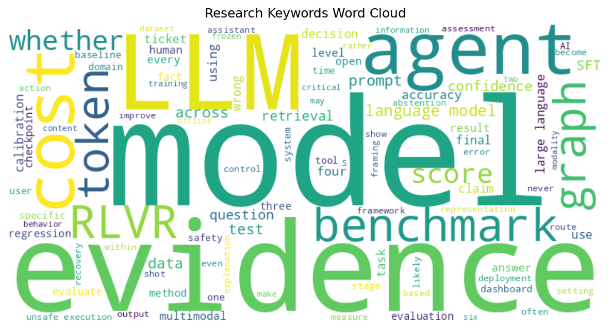

Andrea Giuseppe Di Francesco, Rishabh Jain, Franco Maria Nardini, Nicola Tonellotto, Pietro Liò et al.
2026-10-22T17:13:03Z
Recent methods for injecting graph structure into LLM prompts include graph soft prompting, in which a graph neural network (GNN) learns graph-specific tokens that capture relational information among...
Yunfei Xie, Howard H. Qian, Shiyi Lan, Kaiyu Hang, Chen Wei
2026-10-22T17:59:51Z
Robotic foundation models are typically evaluated through costly closed-loop rollouts, which motivates cheap offline proxies for model capability. The Platonic Representation Hypothesis (PRH) suggests...
Humza Akhtar, Brian Freeman
2026-10-22T16:57:01Z
Industrial organizations hold operational knowledge in structured records, such as telemetry, point lists, and transactions, and in unstructured sources, such as manuals, service notes, communications...
Qijin Zhang, Hanzhen Wang, Yuehan Zhao, Haoyu Dai, Yao Shu et al.
2026-10-22T17:57:04Z
Tool-using language model agents rely on environmental facts to decide whether an action is permitted. When a tool response omits a safety-relevant fact, an agent may carry out a prohibited action eve...
Qijin Zhang, Hanzhen Wang, Yuehan Zhao, Haoyu Dai, Yao Shu et al.
2026-10-22T17:57:04Z
Tool-using language model agents rely on environmental facts to decide whether an action is permitted. When a tool response omits a safety-relevant fact, an agent may carry out a prohibited action eve...
Miguel Mochizuki Silva, Samuel Ismael, Mateus C. Dias, Thaís Gaudêncio, Yuri Malheiros et al.
2026-10-22T17:36:14Z
Purpose: To describe an evidence-aware retrieval evaluation protocol for a clinical retrieval-augmented generation (RAG) system over breast lesion management literature, addressing the dependence of r...
Sachin Gupta
2026-10-22T17:58:52Z
Wrong automatic routing of an IT support ticket can cost more than human triage. We evaluate cost-aware abstention as an offline, cost-conditional readiness assessment: select a routing policy on cali...
Sachin Gupta
2026-10-22T17:58:52Z
Wrong automatic routing of an IT support ticket can cost more than human triage. We evaluate cost-aware abstention as an offline, cost-conditional readiness assessment: select a routing policy on cali...
Isaac Gibbs, Elise L. Han, Ryan J. Tibshirani, Tijana Zrnic
2026-10-22T17:59:22Z
We consider online monitoring of an AI system that produces a sequence of decisions. At each round, the system outputs a proposed decision together with a confidence score estimating the trustworthine...
Miguel Fernandez-de-Retana, Unai Zulaika, Ruben Sanchez-Corcuera, Aritz Bilbao-Jayo, Aitor Almeida
2026-10-22T17:23:11Z
Accuracy on medical examinations is common evidence offered for the clinical use of language models, yet a health system that intends to run an open model on its own hardware needs to know considerabl...
Miguel Fernandez-de-Retana, Unai Zulaika, Ruben Sanchez-Corcuera, Aritz Bilbao-Jayo, Aitor Almeida
2026-10-22T17:23:11Z
Accuracy on medical examinations is common evidence offered for the clinical use of language models, yet a health system that intends to run an open model on its own hardware needs to know considerabl...
Deepthika S, Pawni Yadav, B. Sankar
2026-10-22T17:15:59Z
Research on sycophancy asks whether large language models (LLMs) bend towards what their users want to hear. We ask the reverse question: when an LLM is confident, consistent, and wrong, do users bend...
Robin Quériaux, Solveig Bachellery, Léa Déléris, Saurabhsingh Rajput, Mariam Barry et al.
2026-10-22T17:23:39Z
Institutions that deploy large language models in regulated settings often need technical evidence of responsible AI practices before approving a deployment. COMPL-AI provides a technical interpretati...
Sihan Yang, Jie Huang, Hanxuan Li, Yifan Guo, Weigao Sun et al.
2026-10-22T17:14:38Z
Sequence compression is a fundamental operation and a critical information bottleneck in efficient language and multimodal models, and yet prevailing approaches based on pooling or learned projections...
Suyash Mishra, Qiang Li, Subhabrata Adak, Upender Phogat, Srikanth Patil et al.
2026-10-22T16:31:36Z
Large language models (LLMs) are increasingly used to generate domain-specific commercial & medical content (e.g., claims, statements, and promotional phrases) in regulated industries such as pharmace...
Franco Rugolon, Ioanna Miliou, Panagiotis Papapetrou
2026-10-22T17:26:58Z
Counterfactual explanation methods have been introduced for unimodal settings, with dedicated frameworks for tabular, timeseries, text, and image data, yet no post-hoc method has been designed for cla...
Pellegrino Casoria, Simon Pietro Romano
2026-10-22T17:13:46Z
In the post-API landscape, social-media profiling has become inexpensive and automated: Large Language Models (LLMs) can extract structured information from unstructured content and deduce attributes ...
Barış Alparslan, Sandy Tanwisuth, Caleb Petterson
2026-10-22T17:44:41Z
Instrumental convergence is often invoked as a general reason to expect capable agents to acquire or express power-seeking subgoals: self-preservation, resource acquisition, deception, or resistance t...
Barış Alparslan, Sandy Tanwisuth, Caleb Petterson
2026-10-22T17:44:41Z
Instrumental convergence is often invoked as a general reason to expect capable agents to acquire or express power-seeking subgoals: self-preservation, resource acquisition, deception, or resistance t...
Shihui Li, Mette Andersen, Martha Lewis
2026-10-22T16:33:01Z
Metaphor is a crucial aspect of human cognition. As such, we would like to understand how it is represented in large language models (LLMs) and how it might be controlled. We use mechanistic interpret...
